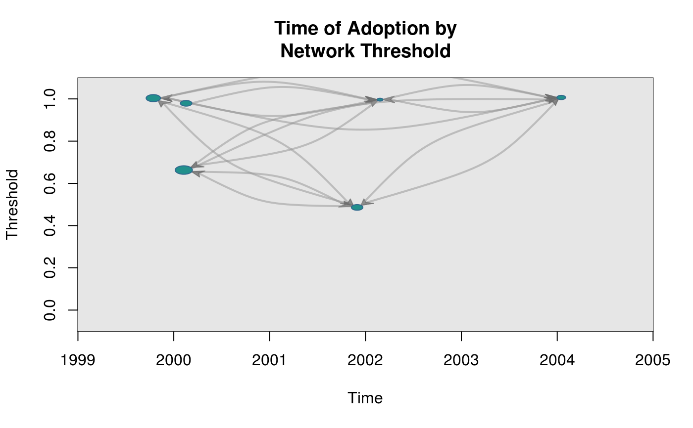
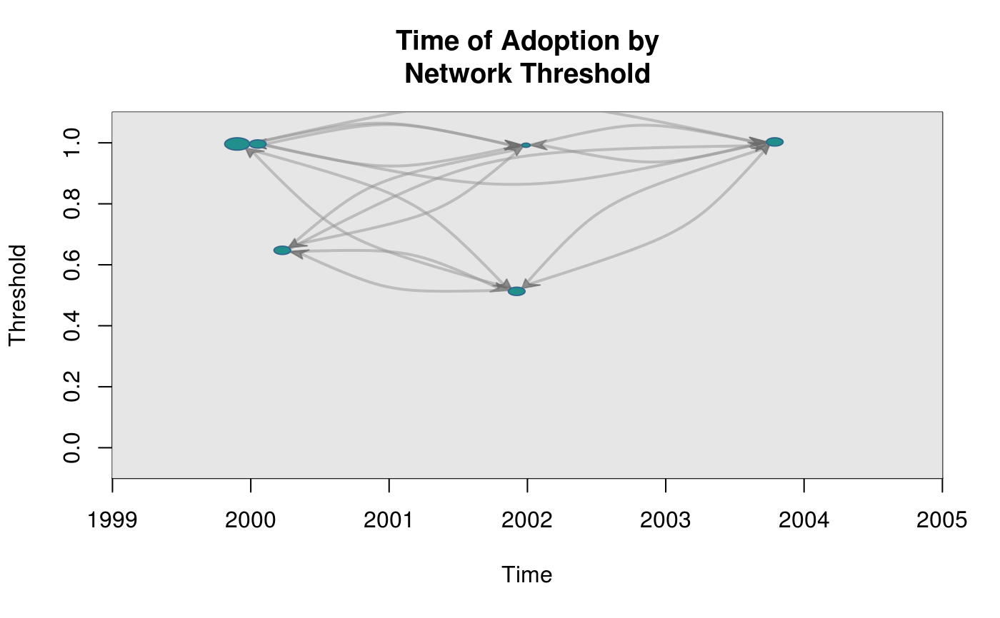

Draws a graph where the coordinates are given by time of adoption, x-axis, and threshold level, y-axis.
plot_threshold(graph, expo, ...) # S3 method for diffnet plot_threshold(graph, expo, ...) # S3 method for array plot_threshold(graph, expo, ...) # S3 method for default plot_threshold( graph, expo, toa, include_censored = FALSE, t0 = min(toa, na.rm = TRUE), attrs = NULL, undirected = getOption("diffnet.undirected"), no.contemporary = TRUE, main = "Time of Adoption by\nNetwork Threshold", xlab = "Time", ylab = "Threshold", vertex.size = "degree", vertex.color = NULL, vertex.label = "", vertex.label.pos = NULL, vertex.label.cex = 1, vertex.label.adj = c(0.5, 0.5), vertex.label.color = NULL, vertex.sides = 40L, vertex.rot = 0, edge.width = 2, edge.color = NULL, arrow.width = NULL, arrow.length = NULL, arrow.color = NULL, include.grid = FALSE, vertex.frame.color = NULL, bty = "n", jitter.factor = c(1, 1), jitter.amount = c(0.25, 0.025), xlim = NULL, ylim = NULL, edge.curved = NULL, background = NULL, ... )
| graph | A dynamic graph (see |
|---|---|
| expo | \(n\times T\) matrix. Esposure to the innovation obtained from |
| ... | Additional arguments passed to |
| toa | Integer vector of length \(n\) with the times of adoption. |
| include_censored | Logical scalar. Passed to |
| t0 | Integer scalar. Passed to |
| attrs | Passed to |
| undirected | Logical scalar. When |
| no.contemporary | Logical scalar. When TRUE, edges for vertices with the same
|
| main | Character scalar. Title of the plot. |
| xlab | Character scalar. x-axis label. |
| ylab | Character scalar. y-axis label. |
| vertex.size | Numeric vector of size \(n\). Relative size of the vertices. |
| vertex.color | Either a vector of size \(n\) or a scalar indicating colors of the vertices. |
| vertex.label | Character vector of size \(n\). Labels of the vertices. |
| vertex.label.pos | Integer value to be passed to |
| vertex.label.cex | Either a numeric scalar or vector of size \(n\). Passed to |
| vertex.label.adj | Passed to |
| vertex.label.color | Passed to |
| vertex.sides | Either a vector of size \(n\) or a scalar indicating the number of sides of each vertex (see details). |
| vertex.rot | Either a vector of size \(n\) or a scalar indicating the rotation in radians of each vertex (see details). |
| edge.width | Numeric. Width of the edges. |
| edge.color | Character. Color of the edges. |
| arrow.width | Numeric value to be passed to |
| arrow.length | Numeric value to be passed to |
| arrow.color | Color. |
| include.grid | Logical. When TRUE, the grid of the graph is drawn. |
| vertex.frame.color | Either a vector of size \(n\) or a scalar indicating colors of vertices' borders. |
| bty | See |
| jitter.factor | Numeric vector of size 2 (for x and y) passed to |
| jitter.amount | Numeric vector of size 2 (for x and y) passed to |
| xlim | Passed to |
| ylim | Passed to |
| edge.curved | Logical scalar. When curved, generates curved edges. |
| background | TBD |
When vertex.label=NULL the function uses vertices ids as labels.
By default vertex.label="" plots no labels.
Vertices are drawn using an internal function for generating polygons.
Polygons are inscribed in a circle of radius vertex.size, and can be
rotated using vertex.rot. The number of sides of each polygon
is set via vertex.sides.
Use threshold to retrieve the corresponding threshold
obtained returned by exposure.
Other visualizations:
dgr(),
diffusionMap(),
drawColorKey(),
grid_distribution(),
hazard_rate(),
plot_adopters(),
plot_diffnet2(),
plot_diffnet(),
plot_infectsuscep(),
rescale_vertex_igraph()
# Generating a random graph set.seed(1234) n <- 6 nper <- 5 graph <- rgraph_er(n,nper, p=.3, undirected = FALSE) toa <- sample(2000:(2000+nper-1), n, TRUE) adopt <- toa_mat(toa) # Computing exposure expos <- exposure(graph, adopt$cumadopt) plot_threshold(graph, expos, toa)# Calculating degree (for sizing the vertices) plot_threshold(graph, expos, toa, vertex.size = "indegree")